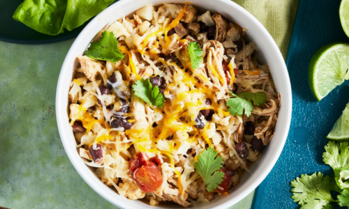

Slow-Cooked Chicken Burrito Bowl (For 1)
Ingredients
- 1 chicken breast
- 1/2 cup salsa
- 1/2 cup black beans
- 1/2 cup corn kernels
- 1/2 cup chicken broth
- 1 tsp cumin
- 1 tsp chili powder
- Salt and pepper to taste
- 1 cup cooked rice
Toppings
- Shredded cheese
- Avocado
- Sour Cream
- Cilantro
- Lime Wedges, for jucie
Directions
- Place chicken breast in a small crockpot. Add the salsa, black beans, corn, chicken broth,
cumin, chili powder, salt, and pepper.
- Cook on low for 6-8 hours or until chicken is tender and easily shredded.
- Shred the chicken with two forks and mix well with the sauce.
- Serve over cooked rice and top with shredded cheese, avocado, sour cream, cilantro, and
lime juice.